Начнём с безопасности. Вы сейчас можете наблюдать за животным с безопасного расстояния?
Спокойная помощь
в стрессовый момент
Система собрана из кода прототипа «Подхват». Каждое значение ниже — то, что реально отрисовывается в приложении; компоненты на этой странице подключают тот же podhvat.css, что и прототип.
Один шаг за раз
Экран показывает следующее действие, а не весь маршрут. Главная кнопка одна и всегда лаймовая.
Стекло только в управлении
Навигация, шапка и поле ввода — полупрозрачные. Содержимое — непрозрачные карточки.
Не обещаем лишнего
Запрос, задача, приём и согласие на контакты — разные состояния. Ответ организации не равен приёму животного.
Две темы, два языка
Светлая и тёмная темы, RU и EN. «Меньше движения», «Меньше прозрачности», «Больше контраста» — в настройках.
Цвет
Ink, paper, white и лайм — основа. Воздушный сине-серый используется на главной и в фоне случая. Статусные цвета всегда сопровождаются иконкой и текстом.
Поверхности и текст — переключаются темой
Основа бренда
Статусы
Контраст основных пар
| Пара | Текущая тема | Контраст | WCAG AA |
|---|
Типографика
Системный шрифт iOS (SF Pro), на других платформах — Segoe UI и Arial. Веса: 400 для крупных заголовков, 500–600 для действий и подзаголовков.
В прототипе встречалось около десяти размеров. Шкала выше — рабочая: новые экраны берут значения только из неё; близкие значения (13, 15 px) постепенно приводятся к 14 и 16.
Геометрия
Все поля и интервалы проверяются по фактическим границам элементов, а не по декларациям CSS.
Поля и интервалы
| Токен | px | Где применяется |
|---|---|---|
--page-inset | 10 | Внешние поля страницы, плавающие панели |
--control-inset | 10 | Кнопки и круглые элементы от внутреннего края плашки |
--surface-inset | 18 | Текст внутри карточек |
--section-gap | 12 | Интервал между карточками и кнопками |
| Страница на ширине | 320–430 | Мобильная рамка 390 на десктопе |
Высоты
56
главное
главное
54
кнопка · круг
кнопка · круг
44
компактное
компактное
40
тег
тег
24
иконка
иконка
Радиусы
pill
круг
28
карточка
карточка
24
поле
поле
22
фото в карточке
фото в карточке
20
плитка
плитка
16
значок
значок
Фото внутри карточки (22) = радиус карточки (28) минус поле 6 — вложенные углы остаются концентричными.
Компоненты
Живые образцы. Переключатели темы и движения вверху страницы действуют на все из них.
Кнопки
Высота: 54 по умолчанию, 56 для главного действия на экране. Нажатие — масштаб .92 за 120 мс, иконка не деформируется.
Теги и статусы
ИдётНужно вниманиеСрочноЛаймЗакрытНейтральный
Поля формы
Карточки и уведомления
Рыжий пёс
ИдётГородской парк · #0241
Следующий шаг · 3 / 5
Найти помощника
Согласие относится только к этому случаю и этому собеседнику. Его можно отозвать.
Маршрут
✓
Оценить
Данные сохранены3
Найти помощь
Текущий этап4
Согласовать
ВпередиСообщения Скаута
Нижняя навигация
Четыре раздела: Главная, Рядом, Случай, Связь. Профиль — через шапку. Подсветка вкладки определяется по экрану: оценка, план заботы и история относятся к «Случаю».
v14 · Карточка случая, миниатюры и мини-кнопки
Рыжий пёс
Сегодня · #0241Карточка: радиус 32, внутренний отступ 10. «Колодец» с фото 28, фото растворяется вниз градиентом. Миниатюры 58 px. Мини-кнопка: круг 56 (радиус 28), подпись 12 px снизу, на ≤350 px — 11 px.
v14 · Сегмент, чипы, поля без обводки
ВидОкрасГабаритыРайонФото учтено
Поле — заливка --field-fill, без рамки. Фокус: кольцо 3 px и линия 1,5 px (синяя в светлой теме, лайм в тёмной). Ошибка — красная внутренняя линия.
v14 · Шкала срочности и статус ответа
НаблюдениеВниманиеСрочно
Ответ помощи
2 / 4- Увидели
- Ответили
- Принимают
- Забрали
Шкала — три сегмента с маркером, цвета мягкие (зелёный, жёлтый, коралловый). Лестница — четыре шага; текущий шаг обведён лаймовым кольцом. «Ответ организации» никогда не равен «приняли».
v14 · Пустое состояние, скелетон, кольцо

Задач пока нет
Выберите помощника — и здесь появится согласованная задача.
67%
Скелетон вместо спиннера; при «Меньше движения» мерцание отключается. Кольцо хранит значение в stroke-dasharray.
v14 · Уведомление, лента напоминаний, баннер сети
v14 · Листовка с QR
Найдено животное
Рыжий пёс · #0241
QR кодирует пример ссылки https://podhvat.example/c/0241 (ECC L, версия 2). Генератор — src/js/16-qr.js, проверен декодером.
v15 · Карточка помощника в списке
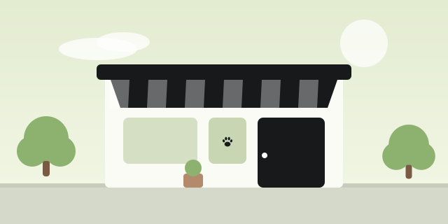
Зоомагазин «Лапа»
Товары первой необходимости · 1,5 км
Обложка 116 px, радиус 24; аватар 56 с кольцом 4 px цвета карточки и выносом на 30 px вверх; значки достижений 34 px (лайм, максимум три и «+N»). Заголовок и подпись — рядом с аватаром, кнопка «Открыть» 44 px.
v15 · Страница помощника: статистика, услуги, каталог
45ответов
12 минвремя ответа
52помогли
Достижения
Доставка за день
Проверен
Тёплый октябрь
Услуги
- Подбор товаровБесплатно
- Доставка по районуот 150 ₽
Первое необходимое
Статистика — три ячейки без оценок людей. Достижения: круг 54, лайм. Услуги — плашки с заливкой поля, цена справа. Товар — плитка 132 px; «В запросе» заливается лаймом. Иллюстрации сгенерированы кодом (src/js/19-v15-art.js, выгрузка tools/export-art.cjs); фотографии подставляются теми же слотами.
v16 · Таймер ожидания
Ждёт помощи1 ч 44 мин
01 ч3 чсутки
Ищем хозяина
Чаще всего хозяева ищут в первые часы. Опубликуйте листовку с районом.
Три сегмента: до часа, до трёх часов, до суток. Заголовок, текст и одна кнопка зависят от этапа. На главной остаётся одна строка «Ждёт 1 ч 44 мин». Сегмент заполняется 0,8 с; при «Меньше движения» без анимации.
v16 · Голосовое описание
Слушаю…
Нашёл в описании
Микрофон 64 px, во время записи тёмный с лаймовым кольцом. Каждый найденный признак можно снять до заполнения. Если браузер не умеет слушать или нет доступа, остаётся текстовое поле: распознавание работает одинаково.
v16 · Передержка на ночь
Анна · волонтёрПередержка · 1,2 кмГотов(а) взять до 9:00
Приют «Тёплый дом»Приют · 4,6 кмЖдём ответа
Статус ответа — одна строка: ждём, готов, не может. «Принять» создаёт задачу и закрывает остальные запросы. Контакты открываются только после согласия.
v16 · Пустой экран
Пока нет закрытых случаев
Когда вы закроете случай, он сохранится здесь вместе с историей.
Для истории, диалогов, задач, избранного и напоминаний своя сцена 320×150 и одна кнопка. Цвета сцены берутся из токенов --eh-a, --eh-b, --eh-c.
v16 · Скаут по ситуации
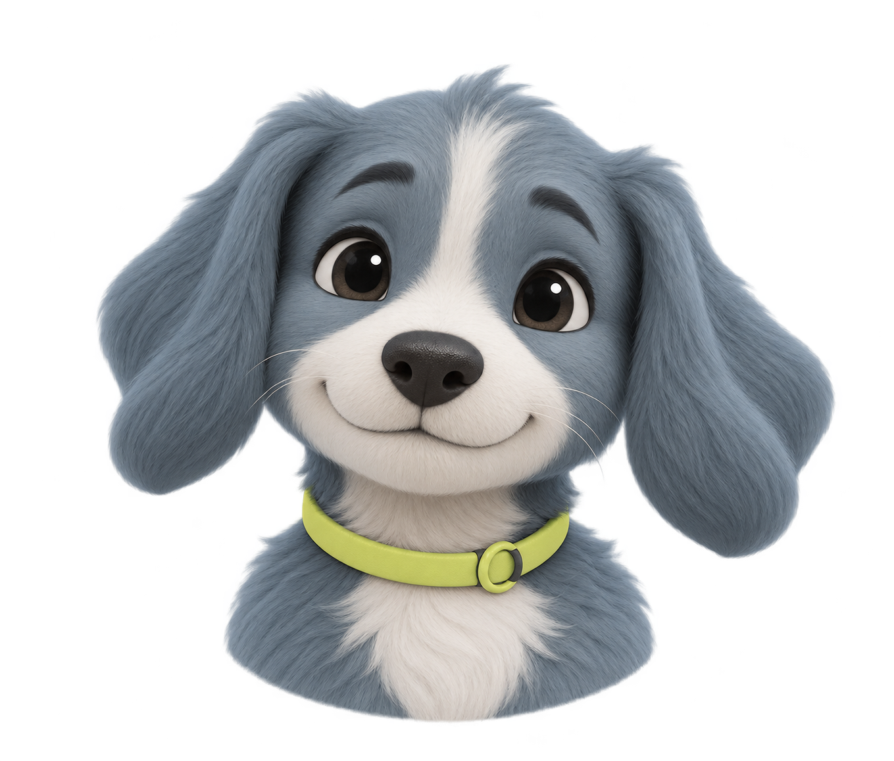
СпокойноСлушает Рядом
Рядом Рад
РадНа главной: срочный случай — «рядом», вечер без места на ночь — «слушает», закрытый случай — «рад», иначе «спокойно». Каждому свой мягкий цикл движения, при «Меньше движения» поза без анимации. При закрытии случая Скаут машет лапой 1,5 с, затем экран возвращается.
v17 · Галерея в карточке: 360°, фото, видео
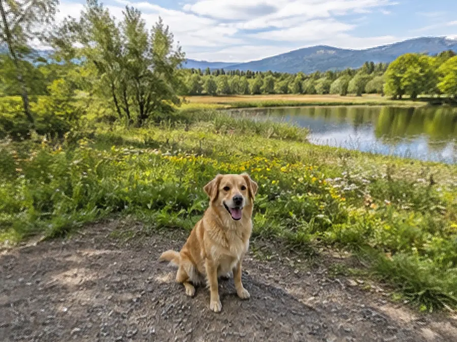
Одна карточка — один набор материалов. 360° идёт первым, дальше обычные фото и видео. Сцену открывает сама картинка с кнопкой «Осмотреть сцену»; отдельной кнопки под ней нет. Миниатюры — 58 px с подписью типа, рамка лаймом у выбранной. Счётчик в углу, свайп и стрелки клавиатуры. Видео играет на месте, без автозапуска.
v17 · Карта: метки по типу материалов
360
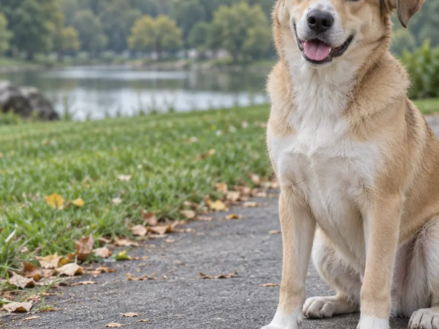
Собака у остановки
Остановка у парка3ВидеоНа карте видны все случаи: метка говорит, что внутри — «360», фото или видео. Фильтр сверху оставляет нужный тип. Выбранная метка лаймовая с кольцом; карточка внизу с одним действием. Метка 34 px, зона нажатия 44 px.
v17 · Чат: вложения и голос
Слушаю… говорите, текст появится в строке
Скрепка слева открывает меню: фото, видео, любой файл, скан. Микрофон справа диктует текст в строку, ничего не отправляя сам; во время записи лаймовый с пульсом и строка «Слушаю…» с кнопкой остановки. Файл до 25 МБ. Фото, видео и звук играют в сообщении, остальное — карточка с именем и размером. Скаут содержимое не разбирает и говорит об этом.
v17 · Скан носа и морды
РезкоСвет хорошийМелко
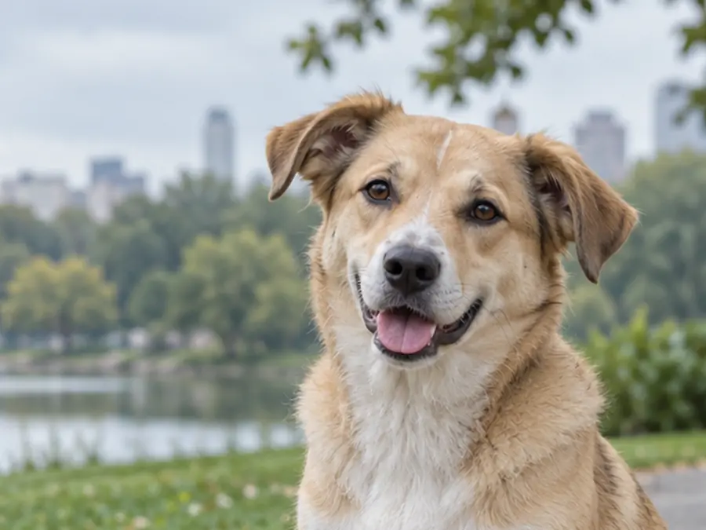
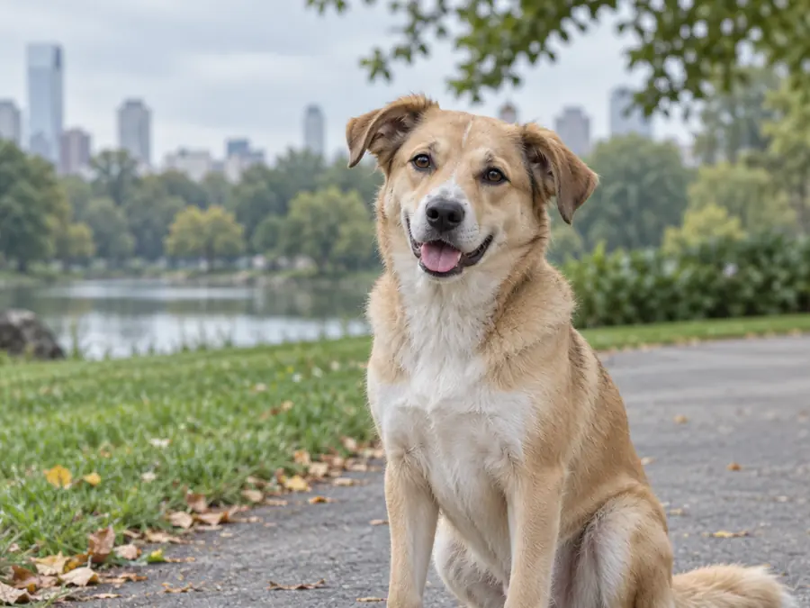
Высокое сходство снимковсо сканом питомца Марта. Это повод проверить, а не доказательство.
Три кадра: анфас, чуть слева, чуть справа (у кошки — морда и два профиля). Рамка и контур подсказывают кадр. Резкость, свет и размер проверяются по самому снимку; плохой кадр предлагают переснять, но можно оставить. Запись сохраняется только после согласия, показывается при сверке и не публикуется. Сходство — три корзины «высокое, среднее, низкое», процента нет. Скан не заменяет чип и не доказывает владельца.
v17 · Где живёт скан
| Экран | Что там про скан |
|---|---|
| Случай | Строка «Скан носа / Скан морды» со статусом, только для собаки и кошки. |
| Приметы | Рядом с голосовым описанием вход «Скан носа» или «Скан морды». |
| Совпадения | Карточка «Сверка по скану»: сделать скан или код и сходство со сканом питомца. |
| Сравнение признаков | Строка «Скан» вместо «ID-слепок». |
| Профиль питомца | Карточка скана «на всякий случай», до потери. |
| Пропал питомец | Отметка «Скан питомца приложен», сам скан не публикуется. |
| Чат со Скаутом | Пункт «Скан носа или морды» в меню вложений. |
v18 · Профиль помощника
1 / 2
Достижения
Лайк — в правом верхнем углу фото, а не отдельной кнопкой внизу. Под фото одна кнопка «Связаться» (если диалог есть — «Открыть диалог»). «Ещё» и «Обсудить со Скаутом» убраны: Скаут уже доступен через «Описать ситуацию». Достижения — иконки внахлёст без подписей, по нажатию открывается описание. Фотографий в профиле и в услугах может быть несколько, 4:3, листаются жестом.
v18 · Заметки в избранном
Позвонить после 18:00
Заметка живёт под сохранённой карточкой или отдельно (вкладка «Заметки»). Текст до 400 знаков и пять отметок: позвонить, обсудить, подходит, не подходит, важно. «Сделано» зачёркивает текст. Данные хранятся на устройстве.
v18 · Правила против дублей
| Правило | Как проверяется |
|---|---|
| Один путь к одному месту | Если крупная кнопка шага ведёт на экран, строка списка и чип с тем же адресом не показываются. |
| Один вход в Скаута | На экране не больше одной кнопки в Скаута. Маскот на главной — иллюстрация. |
| Одна главная кнопка | Лаймовая кнопка одна на экран, остальные вторичные. |
| Роль в метке, не в имени | «Волонтёр» — в метке над именем; имя без приписки. |
| Лайк — на фото | Сердечко в углу фото или карточки, не отдельной кнопкой внизу. |
v19 · Ответ помощника в чате
Анна — прочитано00:34
Здравствуйте! Вижу запрос по случаю #0241. Готова помочь, задачу подтверждаю.00:34
Договорённость зафиксированаПередержка до 7 дней
После сообщения помощник «читает» (1 с), «печатает» (точки) и отвечает по смыслу: цена, время, адрес, благодарность. После запроса помощи он подтверждает задачу сам, и в чате появляется одна карточка договорённости без повтора строкой. В закрытом случае ответов нет. Это имитация: реальных сообщений прототип не отправляет.
v19 · Сортировка и сравнение
Сначала
АннаВолонтёрДмитрийВолонтёр
Ответ18 мин9 мин
Рейтинг4,94,8
Четыре сортировки: ближе, быстрее отвечают, выше рейтинг, бесплатные. Значок рядом с «Открыть» добавляет карточку к сравнению (до трёх). Лучшее значение в строке отмечено точкой; при равенстве точки нет. Сравнение берёт данные карточек и ничего не оценивает от себя.
v19 · Напоминания у заметок
Позвонить Анне
Напомнить: сегодня 19:00
Напоминания
Срок: через час, сегодня вечером, завтра утром, через 3 дня или своё время. Ближайшие 24 часа показаны на главной и в «Уведомлениях»; просроченные подсвечены. Когда срок наступил, приходит один тост. «Сделано» снимает напоминание.
v19 · Сверка скана со случаями рядом
Собака в паркеГородской парк · 2,4 кмВысокое сходство снимков
Собака у остановкиОстановка у парка · 3,6 кмСреднее сходство снимков
Есть у экрана совпадений (скан найденного) и у профиля питомца (скан своего). Сравниваются только животные того же вида. Результат — три уровня сходства без процентов и оговорка «повод проверить, а не доказательство». Контакты открываются по согласию обеих сторон.
v19 · Правила: возврат и названия
| Правило | Как проверяется |
|---|---|
| Назад возвращает туда, откуда пришли | Сквозной проход по экранам: после перехода «Назад» ведёт на исходный экран. Скаут больше не возвращает на главную всегда. |
| Одно название на раздел | «Самопомощь» — раздел, «памятка» — статья в нём. Раньше было «Подсказки», «Памятки» и «Самопомощь». |
| Без тупиков | На каждом экране есть следующий шаг, назад или нижняя панель. |
Иконки
Flaticon Uicons (regular-rounded), 24 px, currentColor, без дополнительной обводки. Лицензия — Podhvat/assets/flaticon/LICENSE.txt.
Движение
Движение объясняет переход и не отвлекает. При «Меньше движения» и системном Reduce Motion всё выключается, остаётся мгновенная смена.
| Событие | Время | Кривая | Что происходит |
|---|---|---|---|
| Нажатие | 120 мс | ease-out | Масштаб .92 всего контрола, иконка не деформируется |
| Смена экрана | 380 мс | .22,.7,.2,1 | Кроссфейд: новый экран лежит снизу, прежний гаснет сверху; нижняя панель неподвижна |
| Чекбокс, радио | 140–160 мс | .22,.7,.2,1 | Появление галочки с масштабом .6 → 1 |
| Тег-рейка | 200 мс | ease | Нажатый тег уходит в конец, порядок сохраняется |
| Скаут на главной | 2,8–6 с | ease-in-out | Дыхание, покачивание, наклон или подпрыгивание по ситуации |
| Закрытие случая | 2,6 с | .22,.8,.24,1 | Плашка с Скаутом: появление 0,4 с, взмах лапой 1,5 с, тап закрывает раньше |
| Меню вложений | 220 мс | ease-out | Выезжает на 8 px снизу с лёгким масштабом; при «Меньше движения» сразу |
| Микрофон | 1,3 с, цикл | ease-in-out | Лаймовое кольцо пульсирует, пока идёт запись |
| Reduce Motion | 0 | — | Без transform и shimmer |
Образец
Нажмите
Нажатие и возврат целиком, 120 мсПравила продукта
| Срочный вход | Обходит обычный маршрут и ведёт к специалисту. |
| Дикие и сельскохозяйственные | Наблюдение издалека и профильный специалист. |
| Контакты | Телефон, точка, звонки и видео — только по согласию обеих сторон, в рамках этого случая и этого собеседника. |
| Ответ организации | Не равен подтверждённому приёму животного. |
| Закрытие случая | Один из четырёх итогов, чаты уходят в архив, история допускает отдельные обновления. |
| Скаут | Коротко, тепло, на «вы». Без диагнозов и назначения лечения. |
| Состояния | default · loading · empty · error · attention · closed. Unknown не превращается в ноль. |
Экраны
Все 50 экранов прототипа на ширине 390 px в выбранной теме.
Токены
Машиночитаемая версия — tokens.json. Переменные CSS — в Podhvat/tokens/tokens.css и в начале src/css/15-polish.css.
v20 · Анимированный 3D-Скаут на главной
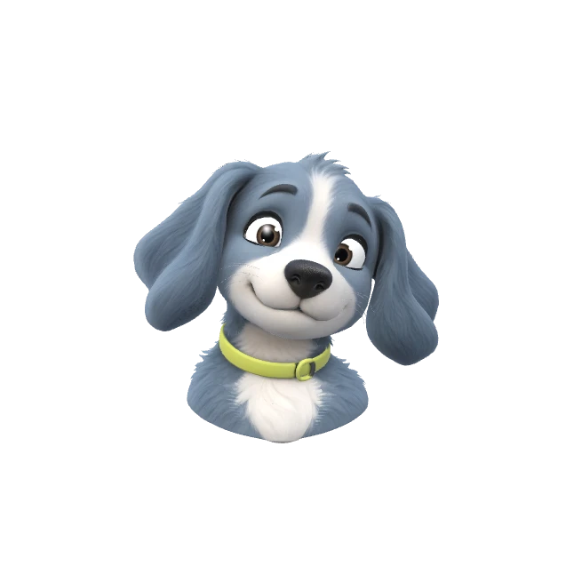
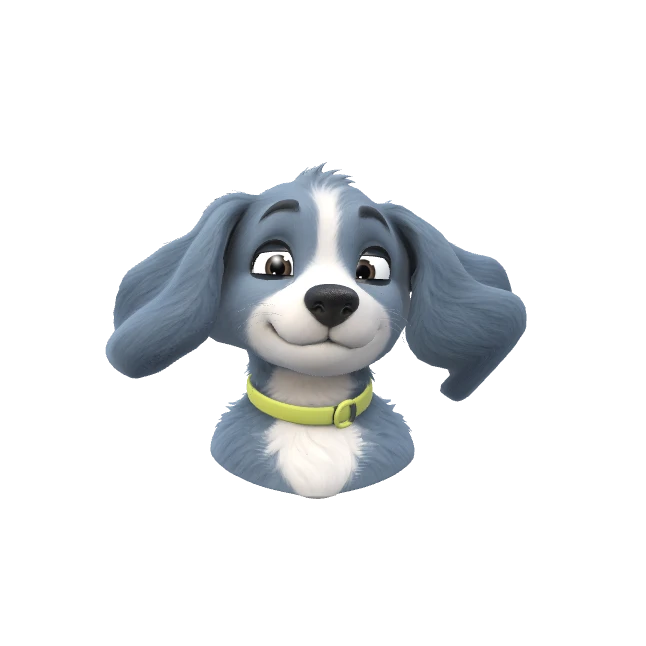
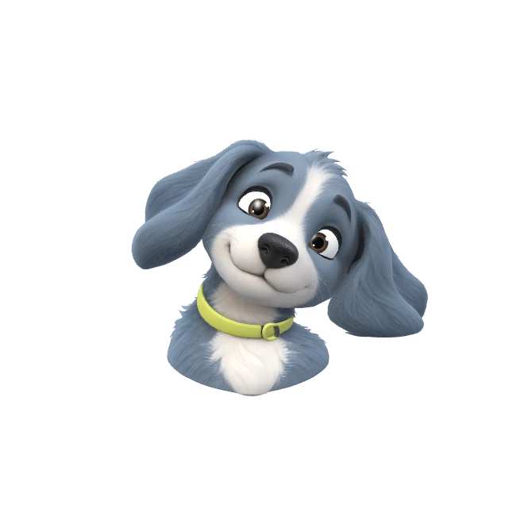
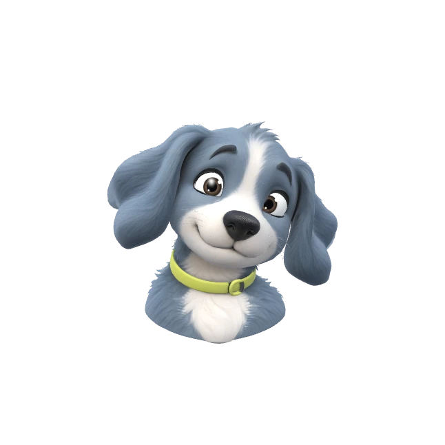
Без круга и подложки: щенок стоит прямо на фоне экрана, размером с прежний круг (188 px). Холст вдвое шире блока (по 40% запаса с каждой стороны), чтобы уши и наклоны головы не упирались в границу и не срезались. За ним лёгкая тень по силуэту, а низ плавно растворяется, поэтому жёсткого среза груди нет. Модель с костями и анимацией покоя встроена без сторонних библиотек (собственный WebGL-рендер, 30 к/с). Взгляд всегда на пользователе: глаза доворачиваются к камере, пока голова покачивается, и не следят за курсором. Реакции: касание — радость; «Попросить помощи» — настороженность; срочный случай — тревога; раз в 6–12 секунд — наклон головы или кивок. Вне главной рендер останавливается; при «Уменьшить движение» поза статична; нет WebGL или слабое устройство — прежний PNG (тоже без круга, с той же тенью).
v20 · Сердечки при касании
Касание щенка выпускает 6–8 сердечек: лайм --lime #DBF95B и плотный лайм --limeStrong #CBEA39 с контуром --ink (как у иконок: контур 1,7 px, скруглённые углы). Размер 14–27 px, подъём 90–150 px, разлёт ±32 px, 1,1–1,7 с, появляются с шагом 70 мс и растворяются. Не больше 28 одновременно, касаний не перехватывают, при «Уменьшить движение» не показываются.
v20 · Тень маскота
| Токен | Значение | Где |
|---|---|---|
--mascot-shadow (светлая тема) | drop-shadow(0 14px 16px rgba(30,45,52,.30)) drop-shadow(0 3px 4px rgba(30,45,52,.16)) | Блок Скаута на главной, образцы в дизайн-системе |
--mascot-shadow (тёмная тема) | drop-shadow(0 12px 16px rgba(0,0,0,.55)) drop-shadow(0 2px 3px rgba(0,0,0,.35)) | Тот же блок, тема dark |
--mascot-fade | linear-gradient(to bottom,#000 70%,transparent 87.5%) | Маска низа: грудь растворяется, а не обрезается |
Тень повторяет силуэт (drop-shadow), а не рисуется эллипсом: когда щенок наклоняет голову или поднимает уши, тень двигается вместе с ним. Двойная тень: широкая мягкая даёт «парение», узкая у контура — контакт с фоном.
v21 · Нижняя панель с главной кнопкой Скаута
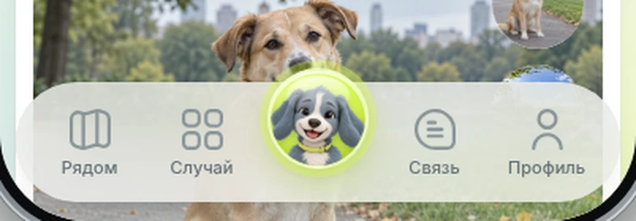
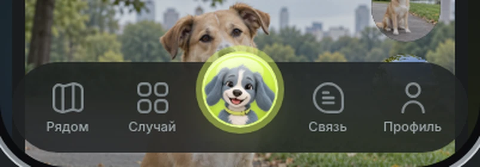
Пять пунктов: Рядом, Случай, кнопка Скаута, Связь, Профиль. Кнопка по центру крупнее остальных (64 pt), выступает над панелью на 10 pt, лаймовая и объёмная, с мордой Скаута. Всегда ведёт на главный экран со Скаутом. Активное состояние — лаймовое свечение 5 pt, подпись «Главная» скрыта визуально и остаётся для скринридера. Остальные пункты работают как раньше; «Профиль» подсвечивается на профиле, питомце, документах, наградах, избранном и настройках.
v21 · Объёмные акцентные кнопки
| Токен | Значение | Роль |
|---|---|---|
--btn3d-top / mid / bot | #EBFF93 → #DBF95B → #C8EA35 | Вертикальный градиент лайма |
--btn3d-inset | блик сверху 1,5 pt белым, тёмная кромка снизу 3 pt | Внутренний объём |
--btn3d-shadow | свечение лаймом 12/22 pt и узкая тень 3/6 pt | Парение над фоном |
Боковые пятна ::before | 4 радиальных пятна (белое, мятное, воздушное) на разной высоте, размытие 7 pt | Стеклянные «меши» по краям |
Ядро и глянец ::after | тёмное ядро по центру (24%) и белый глянец сверху 55% → 0 | Глубина и блик |
--btn-edge / --btn-core / --btn-rim | #E8FF7E / #BFE02B / белый 85% | Светлая кайма и затемнённый центр |
| Нажатие | сдвиг на 1 pt, масштаб .985, тень сжимается | Ощущение клавиши |
Кнопка выглядит как стекло: светлая кайма по периметру, затемнённое ядро в центре, по бокам размытые пятна на разной высоте (светлые и мятные слева, светлые и воздушные справа), сверху мягкий глянец. Объём получают только главные действия: «Попросить помощи», основные кнопки экранов, «Срочно», кнопка Скаута в панели. Вторичные кнопки остаются плоскими, чтобы главное читалось сразу. Текст всегда --ink на лайме.
v21 · Живой фон
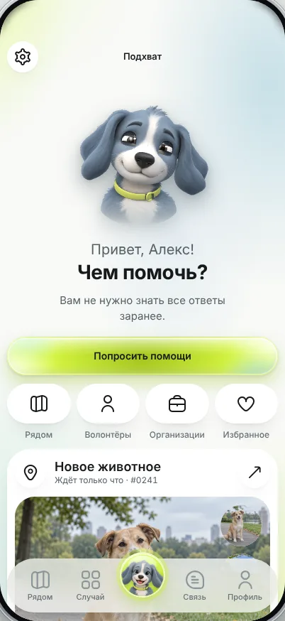
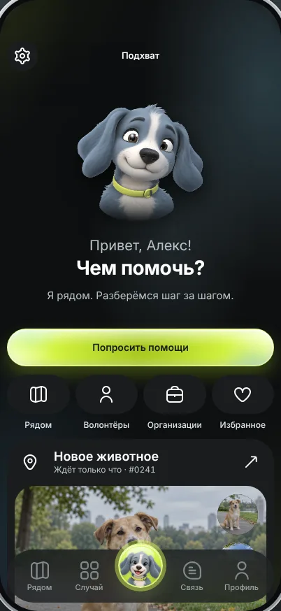
Два слоя размытых пятен лайма, воздуха и мяты плывут и слегка поворачиваются, один за 26 с, другой за 34 с, в противоположных направлениях, поэтому рисунок не повторяется заметно. Анимируются только transform, слой обрезан и не создаёт прокрутку. В тёмной теме пятна глубже и тише. «Уменьшить движение» и системная настройка останавливают фон.
v21 · Чат со Скаутом по сетке
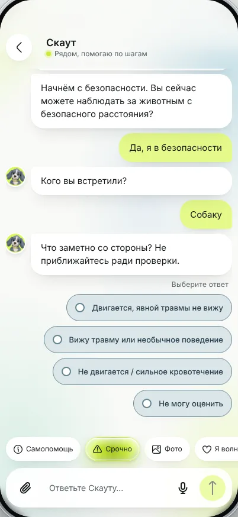
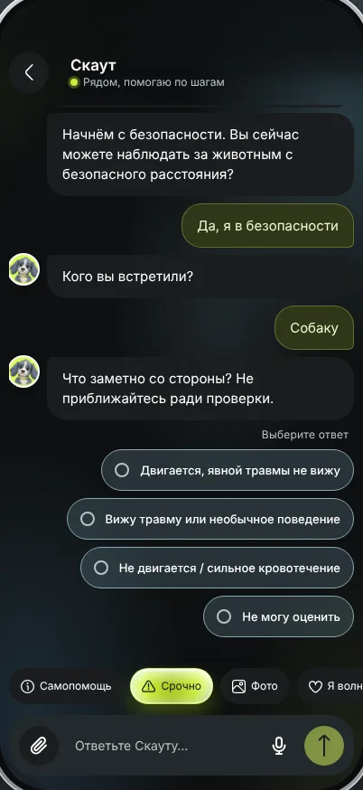
Шапка: стрелка назад, имя «Скаут» и статус «Рядом, помогаю по шагам». Ответы Скаута: круглый аватар 32 pt слева и пузырь со скруглением 6/22/22/22; у подряд идущих ответов аватар показан один раз. Ваши ответы: лаймовый пузырь справа, не шире 78%, скругление 22/22/6/22. Варианты ответа: серо-голубые, под подписью «Выберите ответ». Отступы между сообщениями 8 pt, между группами 12 pt, всё на сетке 8 pt и боковом поле 10 pt, как у остальных экранов.
v21.1 · Главная и профиль
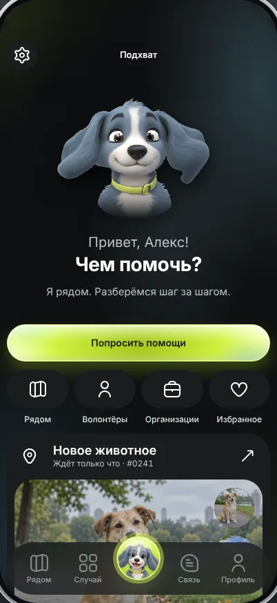
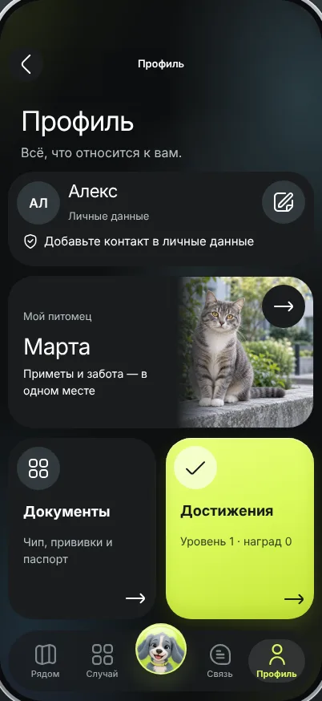
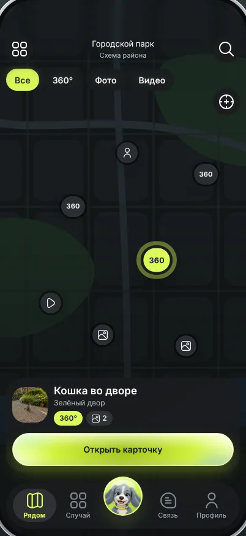
Главная без дубля чата: под входом «Попросить помощи» сразу развёрнутая самопомощь (6 карточек и «Все подсказки»). Подписи мини-кнопок без собственной подложки. Акцентная плитка «Достижения» в обеих темах: лаймовый градиент, текст #17191B, плашка значка белая 62%. Размытие под шапкой продолжается на 120 pt выше экрана (--bx), на «Рядом» панель и фильтры опущены на 36 pt, как шапки других экранов.
v21.2 · Чат, документы, бирка с QR, достижения
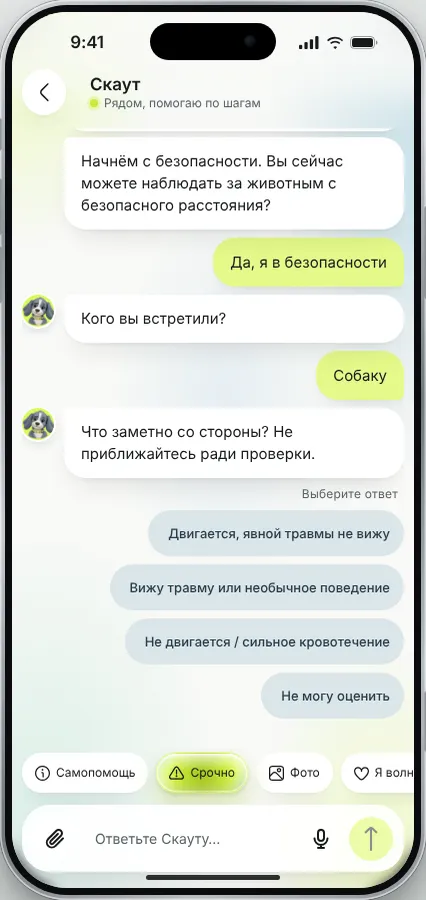
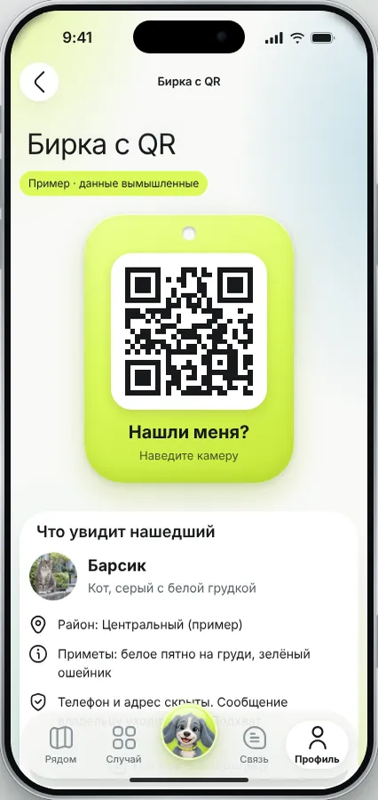
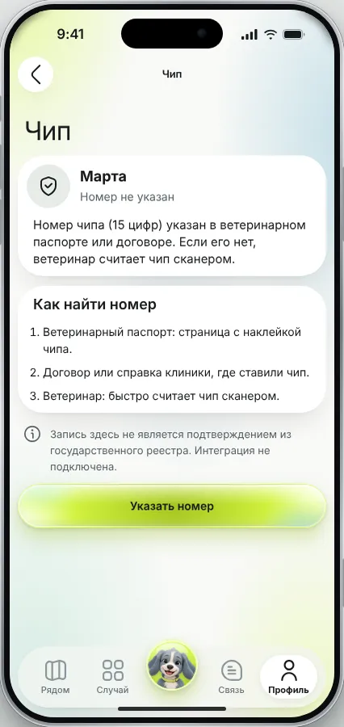
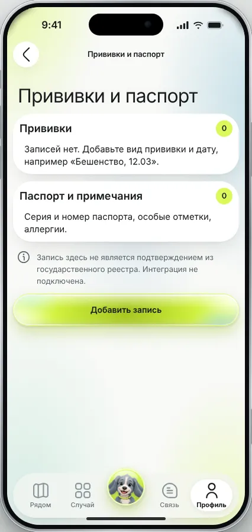
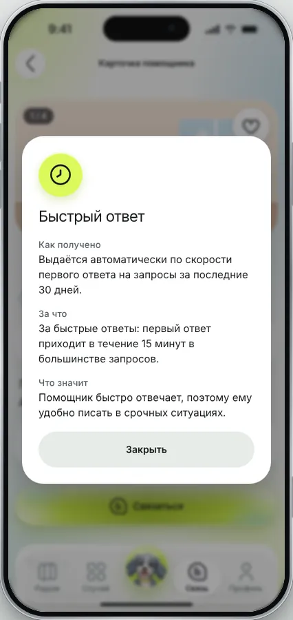
Варианты ответа без обводки и кружка. «Чип» (номер с маской, где найти) и «Прививки и паспорт» (списки записей) — разные страницы. Бирка с QR показана на вымышленных данных: в коде только короткая ссылка. Окна, затемнение и подсказки живут внутри экрана телефона. Достижение: значок, «Как получено», «За что», «Что значит». «Связаться» в карточках стоит под достижениями и лаймовая.
v21.4 · Цветовые теги окраса, шапка случая, чат без панели
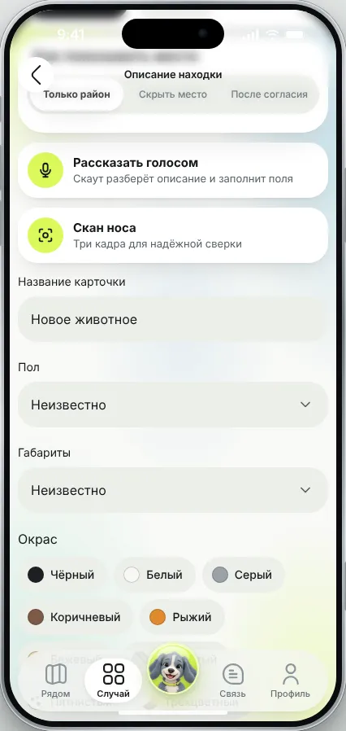
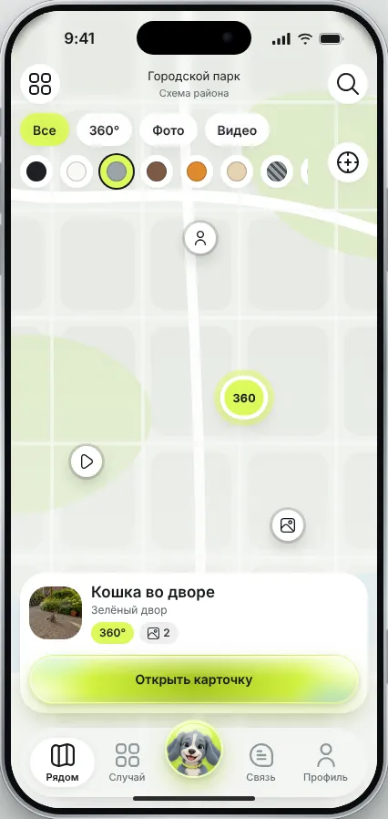
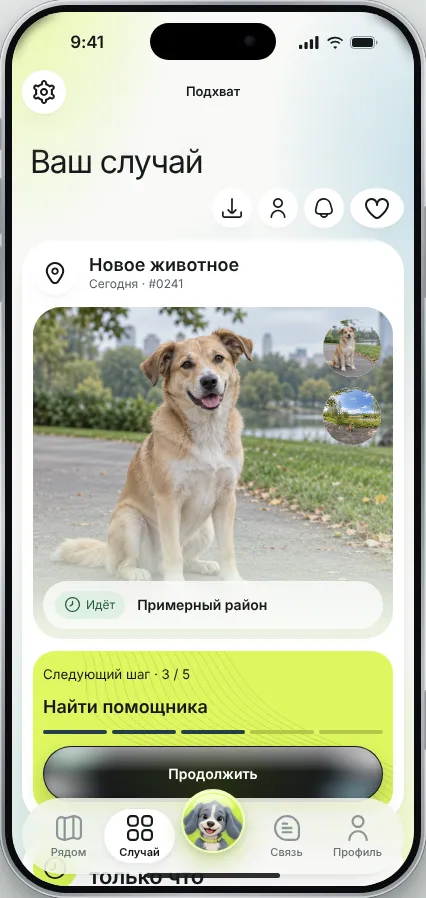
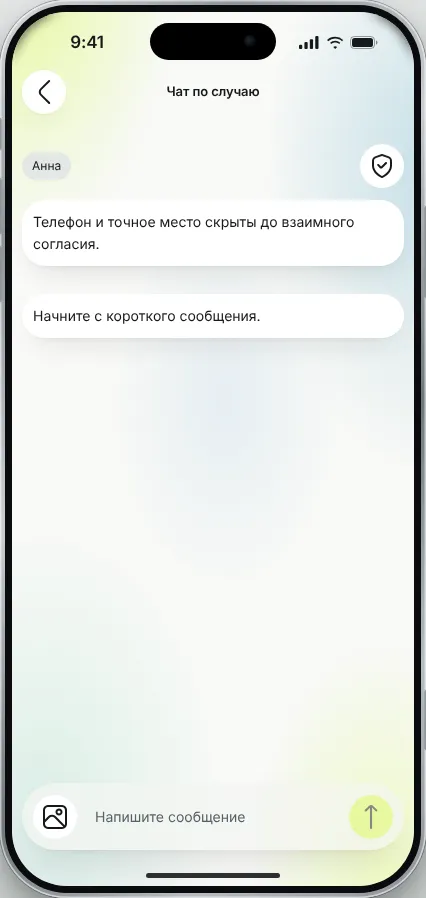
Окрас — 9 тегов-переключателей (≥44 px), можно выбрать несколько; в «Рядом» те же цвета работают как круглые фильтры (подходит любое из выбранных). Круглые кнопки действий случая стоят в одном ряду с заголовком и сердцем, 40×40. Список мест под фирменные иллюстрации — в Podhvat/ILLUSTRATIONS-BRIEF.md.
v21.5 · Отступы, типографика, «Напечатать ошейник»
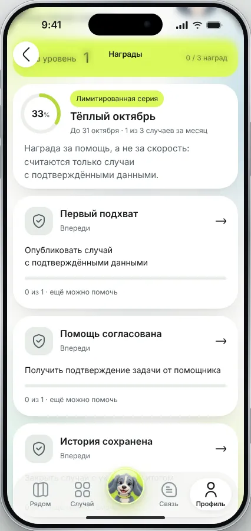
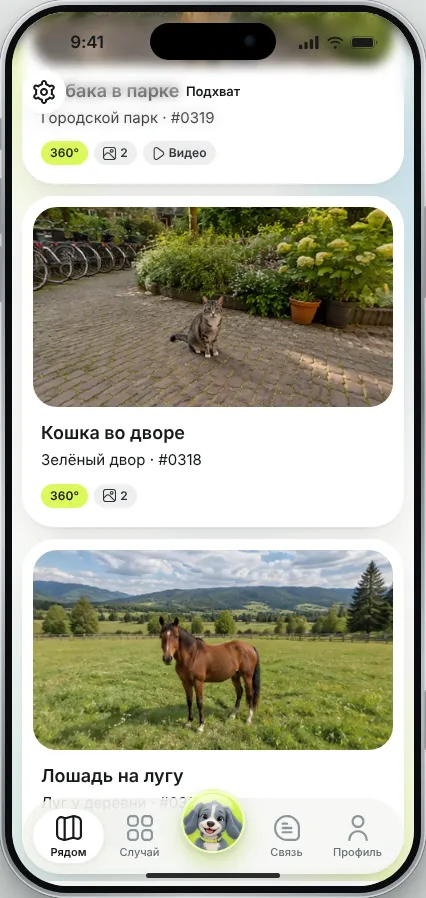
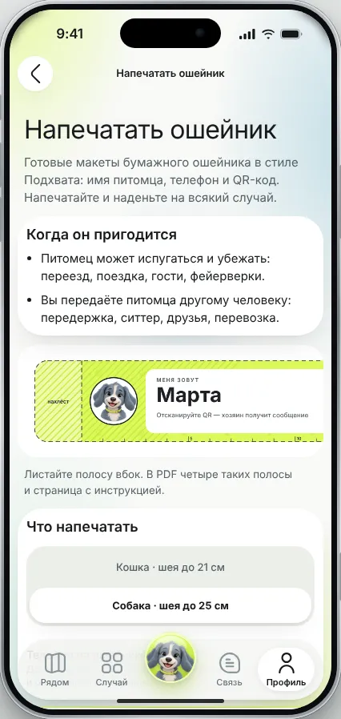
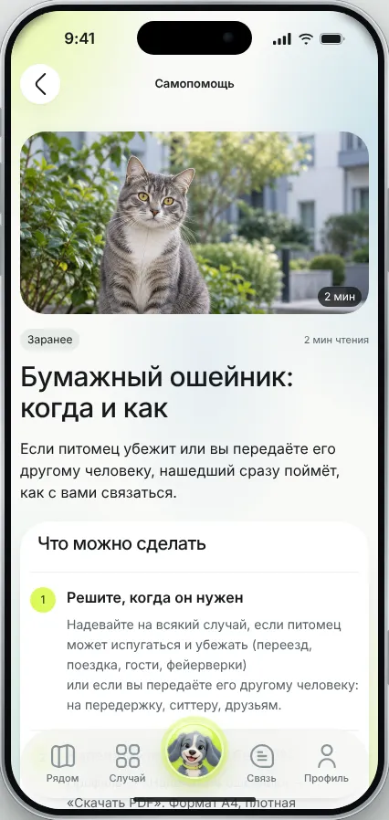
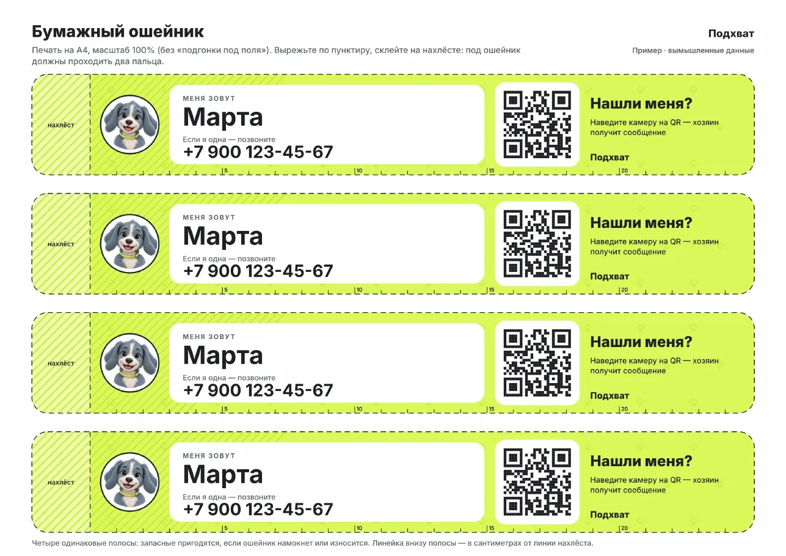
Открыть пример PDF (2 страницы A4: четыре полосы и инструкция; данные вымышленные).
| Правило | Значение |
|---|---|
| Внутренний отступ карточки с текстом | 18–19 px слева и справа, снизу не меньше 16 px |
| Заголовок экрана | на одной левой грани с карточками |
| Неразрывный пробел | после предлогов, союзов и частиц до трёх букв (и, в, на, с, к, о, у, а, но, что, не, по, за, из, от, до, для и др.), перед тире, между числом и единицей; в английском: a, an, the, to, of, in, on, at и др. |
| Переносы | без автоматических; text-wrap: pretty у текста, balance у заголовков и кнопок |
| Бумажный ошейник | A4 альбомная, 4 полосы 38 мм, длина 235 / 273 мм, нахлёст 22 мм, линейка в см, QR 27 мм |
v21.5.1 · Сворачиваемый окрас, единый отступ карточек
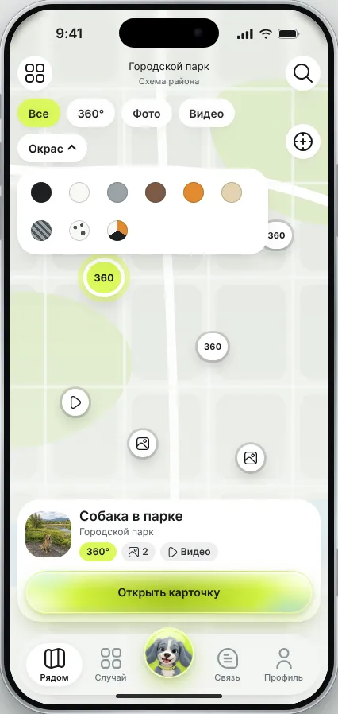
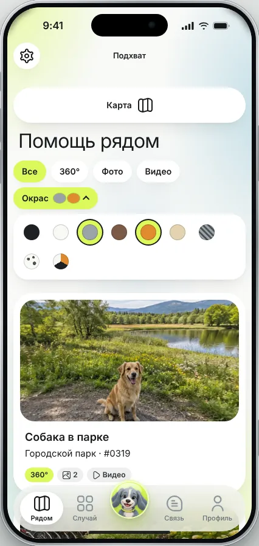
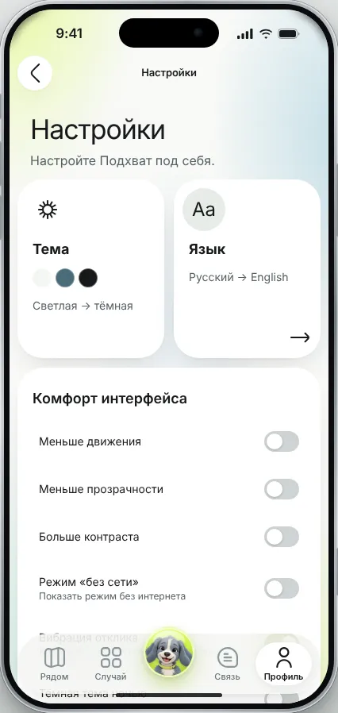
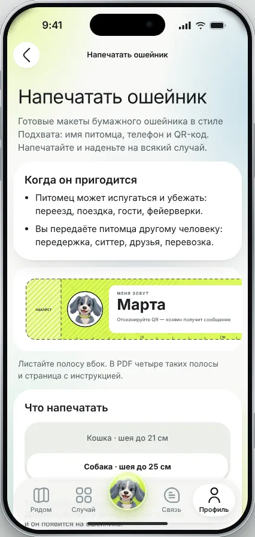
Окрас в «Рядом» свёрнут в кнопку «Окрас» (выбранные цвета видны в ней), раскрывается панелью с переносом: теги не обрезаются краем экрана. У всех карточек с текстом внутренний отступ 18 px, текст стоит в 19 px от края; исключения — карточки с фото, плитки профиля, шапка профиля и герой случая.
v21.6 · Центральная кнопка дока
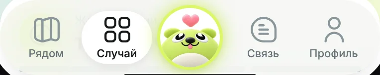
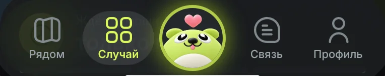
Круг 60 px строго по центру бара (по горизонтали и вертикали), не выступает над ним. Фон круга: белый в светлой теме, #23282b в тёмной. Свечение: кольцо 3 px и размытие в цвете лайма. Изображение — assets/scout-bear.webp (мишка с сердцем, прозрачный фон).
v20 · Мокап iPhone 17 Pro
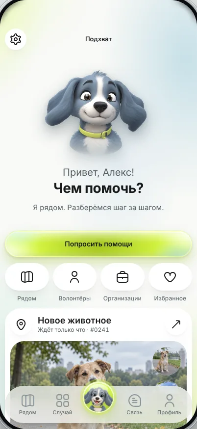
9:41
9:41
| Параметр | Значение |
|---|---|
| Экран | 402 × 874 pt, радиус углов 55 pt |
| Dynamic Island | 126 × 37 pt, 23 pt от верхней грани рамки, по центру |
| Статус-бар | время слева, сеть, Wi-Fi и батарея справа; светлый на тёмных фонах, тёмный на светлых |
| Безопасная зона | сверху 60 pt (шапки экранов начинаются на 36 pt ниже), снизу индикатор «домой» 134 × 5 pt |
| Рамка | титан, 12 pt, кнопки: действие, громкость, питание, управление камерой |
В браузере шире 600 px прототип показывается в рамке и сам уменьшается под высоту окна (экран остаётся 402 × 874, меняется только масштаб). На телефоне (до 600 px) рамки нет: приложение занимает весь экран.
v20 · Варианты ответа в чате
Реплика Скаута — белая
Выберите ответ
Вариант, который можно выбрать
Ещё один вариант
Нажатие — лайм
Ваш ответ — лайм
Три разных вида: Скаут — белый пузырь слева, ваш отправленный ответ — лайм справа, выбор — холодная air-заливка --airSurface с контуром --air, круглым индикатором и подписью «Выберите ответ». Индикатор — «радио»: человек сразу понимает, что это кнопки, а не текст. Нажатие красит вариант в лайм, и он превращается в ваше сообщение. В тёмной теме: rgba(101,133,146,.30) и контур #8CA9B5.
v20 · Правила: живой маскот
| Правило | Как проверяется |
|---|---|
| Смотрит на пользователя, а не за мышкой | Угол между осью глаза и камерой ≤ 4° на всей петле; без коррекции до 26°. В коде нет mousemove и pointermove. |
| Без подложки | Щенок без круга, рамки и обрезки; от фона его отделяет только лёгкая тень (--mascot-shadow). |
| Маскот не кнопка | Касание — реакция; перехода нет, единственная кнопка входа в Скаута — «Попросить помощи». |
| Экономия | 30 к/с, остановка вне главной и вне экрана, 15 к/с на слабом устройстве, затем PNG. |
| Доступность | Декоративный (aria-hidden), статичная поза при «Уменьшить движение». |